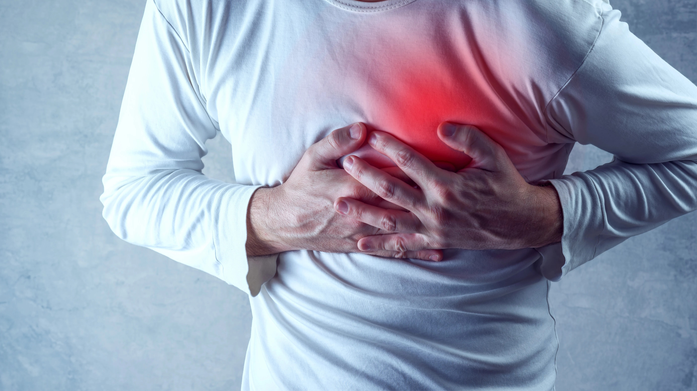

7 Benefits of a Standing Desk
Written by Joe Leech, MS — Updated on June 18, 2017
This article was originally published on Healthline. Please visit the
original article
for more information.
What Is a Standing Desk?

A standing desk, sometimes referred to as a rising desk, is essentially a desk that enables
comfortable standing work.
You may raise the height of the desk and move between sitting and standing positions with
many
of the more recent
models.
Also referred to as a sit-stand desk or a height-adjustable desk.
The health benefits of using a standing desk appear to be substantial, despite the fact that
research is still in its
early phases.
Additionally, it boosts output.
If nothing else, this kind of desk can at least partially mitigate the harmful effects of
excessive sitting.
These are seven advantages of standing desk usage supported by science.
1. Standing Lowers Your Risk of Weight Gain and Obesity
In the end, eating more calories than you expend leads to weight gain.
On the other hand, weight loss occurs when you burn more calories than you take in.
The best approach to burn calories quickly is to exercise, but even just standing up can
have
some benefits.
In fact, studies have shown that standing for the same length of time burns more than 170
extra
calories than sitting
during the afternoon at work .
That translates to over 1,000 additional calories each week merely from midday desk work.
This discrepancy in calories could be one of the causes of the substantial correlation
between
obesity and metabolic
disorders and extended periods of sitting.
2. Using a Standing Desk May Lower Blood Sugar Levels
Generally speaking, the worse a meal is for your health, the higher your blood sugar level
will
be after it.
This is particularly valid for those who have type 2 diabetes or insulin resistance.
Standing for 180 minutes after lunch decreased the rise in blood sugar levels by 43%
compared to
sitting for the same
period of time in a small research involving 10 office workers.
Similar step counts for both groups indicate that standing rather than increased physical
activity at work was the cause
of the lesser increase.
An additional study including twenty-three office workers discovered that an average of
11.1%
less blood sugar increase
occurred when the participants stood and sat down every thirty minutes during the workday.
The detrimental consequences of sitting after meals could be the reason why sitting too much
is
linked to a 112% higher
risk of type 2 diabetes.
3. Standing May Lower Your Risk of Heart Disease

In 1953, the notion that standing improves heart health was first put forth.
According to one study, bus conductors who worked long shifts were half as likely to pass
away
from heart disease than
their counterparts who handled the wheel.
Since then, researchers have made progress in understanding how sitting affects heart
health.
Long periods of inactivity are believed to raise the risk of heart disease by up to 147%.
Because of this, the detrimental consequences of sitting all day may not be mitigated by
even an
hour of vigorous
activity.
There's no denying that increasing your standing time is good for your heart.
4. Standing Desks Appear to Reduce Back Pain
One of the most prevalent ailments among office workers who spend all day on their chairs is
lower back pain.
To determine whether standing desks could help employees with chronic back discomfort,
several
research were done on the
subject.
After utilising a standing desk for a few weeks, 4,444 participants reported a 32%
improvement
in their back discomfort.
A different CDC study indicated that utilising a sit-stand workstation for four weeks only
resulted in a 54% reduction
in upper back and neck pain.
And some of these gains were undone when the sit-stand desk was taken away in less than two
weeks.
5. Standing Desks Help Improve Mood and Energy Levels
It seems that using a standing desk improves general health.
Those who used standing workstations during a seven-week research reported feeling less
stressed
and exhausted than
those who sat all day.
Furthermore, 87% of people who utilised standing workstations said they felt more energised
and
alive during the day.
The general mood had reverted to normal when they got back to their former desks.
These results align with a large body of research on the relationship between sedentary
behaviour and mental health,
which shows that sedentary behaviour increases the risk of anxiety and depression.
6. Standing Desks May Even Boost Productivity

The fact that standing workstations can impede regular chores like typing is one of their
main
drawbacks.
While it might take some getting accustomed to, standing workstations don't seem to have a
significant effect on your
daily productivity.
Using a standing desk for four hours a day did not affect the number of characters typed per
minute or the number of
errors produced by the sixty young office workers who participated in the study.
Using a standing desk is more likely to increase your productivity than to decrease it,
given
that standing also lifts
your spirits and increases your vitality.
7. Standing More May Help You Live Longer
Extensive sitting has been strongly associated with an early mortality, according to studies.
This is not surprising considering the close correlation that exists between heart disease,
type
2 diabetes, and
sedentary behaviour.
Indeed, the most sedentary adults had a 49% higher risk of early death compared to the least
sedentary people, according
to a study of 18 studies.
According to another study, the average American's life expectancy would rise by two years
if
they reduced their daily
sitting time to three hours.
Even though these observational studies cannot establish a cause and effect relationship,
standing more frequently
appears to have a positive impact on lifespan.
Conclusion
Embracing a lifestyle of reduced sitting time positively impacts physical, metabolic, and mental
health, potentially
extending life expectancy. Considering this, it's recommended to adopt a balance between
standing and sitting, ideally a
50-50 split. Explore our stores to test out the premium standing desks and embark on a journey
towards a healthier work
routine.
Our stores offer premium standing desks for you to experience firsthand. Studies indicate that
using a standing desk at
work notably reduces post-lunch blood sugar levels. Prolonged sitting heightens the risk of
heart disease, as
highlighted by numerous studies. Additionally, standing desks effectively alleviate chronic back
pain caused by extended
sitting while enhancing mood, energy levels, and reducing stress and fatigue.